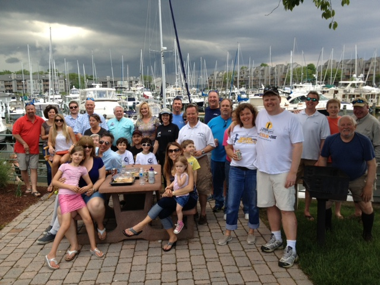

Second Annual MSSA Annapolis Chapter Fishing Tournament Benefiting The EVAN Foundation
A Huge Success!
The Annapolis chapter of the Maryland Saltwater Sportfishing Association held its 2nd Annual Spring Rockfish Tournament benefitting The EVAN Foundation from April 30th through May 5, 2013. The event raised $6,350 for the Foundation – doubling the success of last year’s inaugural event!
The Chesapeake Bay was the site of the tournament which attracted 30 boats all striving to catch the largest rockfish. The Foundation is extremely grateful to tournament organizers Dale Dirks and Bob Thompson, and MSSA Annapolis Chapter President Bob Sheehan and the following sponsors: ALLTACKLE, Chesapeake Harbour Marina, Intrinsic Yacht and Ship, Health and Medicine Counsel of Washington, Kramon & Graham PA, Marty’s Bait and Tackle Shop, Universal Marine, and Friends of EVAN. The Foundation also thanks all of the anglers who participated in this year’s tournament.
First place went to Dale Dirks who reeled in a 42.7 inch rockfish. Chris Rosenthal finished in second place and Chris Hall in third. The Youth Division winners were Justin Stempowski, Anna Estremsky and R.J. Rider.
EVAN Foundation co-founders Wendy and Gavin Lindberg spoke at the May 11th tournament-ending celebration at Chesapeake Harbour Marina in Annapolis, MD. They emphasized how important the tournament is to the ongoing mission of the Foundation and how grateful they are to the Annapolis Chapter for keeping Evan's spirit alive.
For more information on the MSSA Annapolis chapter please visit www.mssaannapolis.com We hope to see you on the water next year!